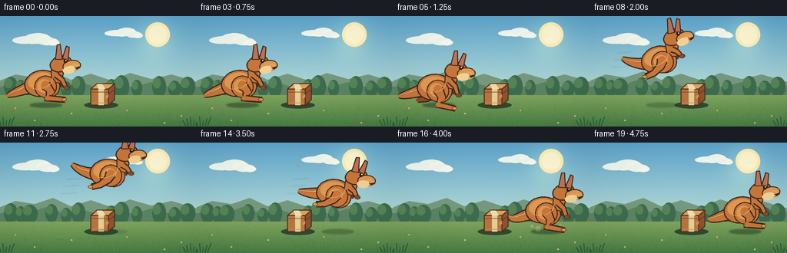
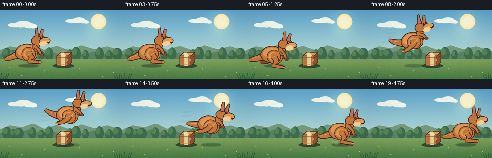
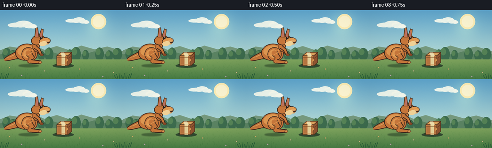

CODING AGENTS AS PIXEL WORLD MODELS
traex/DeepSeek-V4.1-Flash · dynamic_spatial_relationship_0032
点击播放 · 原生 RGB 像素
逐轮保存的候选
回放视频、检查图与代码变化。
每份候选均可单独播放。实际图片检查记录在下方工具轨迹中。
候选 01播放与检查图
点击播放 · 原生 RGB 像素

展开代码变化
--- 上一保存版本
+++ 本次保存版本
@@ -0,0 +1,438 @@
+from __future__ import annotations
+
+import json
+import math
+import random
+from pathlib import Path
+
+import numpy as np
+from PIL import Image, ImageDraw, ImageFilter
+
+import artifact_io
+
+
+ROOT = Path(__file__).resolve().parent
+SPEC = json.loads((ROOT / "task_spec.json").read_text())
+WIDTH = int(SPEC["width"])
+HEIGHT = int(SPEC["height"])
+FRAME_COUNT = int(SPEC["frames"])
+FPS = float(SPEC["fps"])
+S = 4
+WW, HH = WIDTH * S, HEIGHT * S
+
+
+def sc(value: float) -> int:
+ return int(round(value * S))
+
+
+def sp(points):
+ return [(sc(x), sc(y)) for x, y in points]
+
+
+def smoothstep(value: float) -> float:
+ value = max(0.0, min(1.0, value))
+ return value * value * (3.0 - 2.0 * value)
+
+
+def mix(a, b, t):
+ return tuple(round(x + (y - x) * t) for x, y in zip(a, b))
+
+
+def ellipse_points(cx, cy, rx, ry, angle=0.0, count=72):
+ angle = math.radians(angle)
+ ca, sa = math.cos(angle), math.sin(angle)
+ points = []
+ for i in range(count):
+ t = math.tau * i / count
+ x, y = rx * math.cos(t), ry * math.sin(t)
+ points.append((cx + ca * x - sa * y, cy + sa * x + ca * y))
+ return points
+
+
+def draw_poly(draw, points, fill, outline=None, width=1):
+ pts = sp(points)
+ draw.polygon(pts, fill=fill)
+ if outline is not None:
+ draw.line(pts + [pts[0]], fill=outline, width=sc(width), joint="curve")
+
+
+def draw_ellipse(draw, cx, cy, rx, ry, fill, outline=None, angle=0.0, width=1):
+ draw_poly(draw, ellipse_points(cx, cy, rx, ry, angle), fill, outline, width)
+
+
+def limb_polygon(points, widths):
+ left, right = [], []
+ for i, (x, y) in enumerate(points):
+ if i == 0:
+ dx, dy = points[1][0] - x, points[1][1] - y
+ elif i == len(points) - 1:
+ dx, dy = x - points[i - 1][0], y - points[i - 1][1]
+ else:
+ dx = points[i + 1][0] - points[i - 1][0]
+ dy = points[i + 1][1] - points[i - 1][1]
+ length = max(0.001, math.hypot(dx, dy))
+ nx, ny = -dy / length, dx / length
+ half = widths[i] * 0.5
+ left.append((x + nx * half, y + ny * half))
+ right.append((x - nx * half, y - ny * half))
+ return left + right[::-1]
+
+
+def draw_limb(draw, points, widths, fill, outline, outline_extra=1.6):
+ outline_poly = limb_polygon(points, [w + outline_extra * 2 for w in widths])
+ draw_poly(draw, outline_poly, outline)
+ inner_poly = limb_polygon(points, widths)
+ draw_poly(draw, inner_poly, fill)
+ for point, width in zip(points, widths):
+ draw_ellipse(draw, point[0], point[1], width * 0.5, width * 0.5, fill)
+
+
+def bezier(p0, p1, p2, p3, steps=28):
+ out = []
+ for i in range(steps + 1):
+ t = i / steps
+ u = 1.0 - t
+ x = u**3 * p0[0] + 3 * u * u * t * p1[0] + 3 * u * t * t * p2[0] + t**3 * p3[0]
+ y = u**3 * p0[1] + 3 * u * u * t * p1[1] + 3 * u * t * t * p2[1] + t**3 * p3[1]
+ out.append((x, y))
+ return out
+
+
+KEYS = [
+ (0, 59.0, 87.0, -2.0, 0.00, 0.0),
+ (3, 59.0, 87.0, -2.0, 0.00, 0.0),
+ (4, 58.5, 89.0, 2.5, 0.22, 0.1),
+ (5, 58.0, 92.5, 5.0, 0.62, 0.2),
+ (6, 64.0, 80.0, -10.0, 0.28, 0.7),
+ (7, 77.0, 67.0, -14.0, 0.08, 0.9),
+ (8, 93.0, 55.0, -11.0, 0.00, 1.0),
+ (9, 110.0, 45.0, -7.0, 0.00, 1.0),
+ (10, 127.0, 39.0, -3.0, 0.00, 1.0),
+ (11, 144.0, 38.0, 0.0, 0.00, 1.0),
+ (12, 159.0, 44.0, 4.0, 0.00, 0.9),
+ (13, 172.0, 53.0, 7.0, 0.00, 0.7),
+ (14, 183.0, 65.0, 9.0, 0.08, 0.4),
+ (15, 192.0, 78.0, 7.0, 0.20, 0.1),
+ (16, 199.0, 87.5, 3.0, 0.48, 0.0),
+ (17, 202.0, 92.0, 2.0, 0.64, 0.0),
+ (18, 201.0, 88.0, -1.0, 0.22, 0.0),
+ (19, 201.0, 87.0, -2.0, 0.00, 0.0),
+]
+
+
+def pose_at(frame):
+ for i in range(len(KEYS) - 1):
+ if KEYS[i][0] <= frame <= KEYS[i + 1][0]:
+ a, b = KEYS[i], KEYS[i + 1]
+ t = smoothstep((frame - a[0]) / max(1, b[0] - a[0]))
+ values = [a[j] + (b[j] - a[j]) * t for j in range(1, len(a))]
+ return values
+ return list(KEYS[-1][1:])
+
+
+def make_background(frame: int):
+ yy = np.linspace(0.0, 1.0, HH, dtype=np.float32)[:, None]
+ top = np.array([94, 165, 205], dtype=np.float32)
+ middle = np.array([177, 216, 213], dtype=np.float32)
+ bottom = np.array([235, 225, 177], dtype=np.float32)
+ blend = np.clip(yy / 0.64, 0, 1)
+ upper = top[None, None, :] * (1 - blend[:, :, None]) + middle[None, None, :] * blend[:, :, None]
+ lower_mix = np.clip((yy - 0.58) / 0.32, 0, 1)
+ rgb = upper * (1 - lower_mix[:, :, None]) + bottom[None, None, :] * lower_mix[:, :, None]
+ xx = np.linspace(-1.0, 1.0, WW, dtype=np.float32)[None, :]
+ glow = np.exp(-((xx - 0.57) ** 2 / 0.035 + (yy - 0.20) ** 2 / 0.035))[:, :, None]
+ rgb = rgb + glow * np.array([30, 23, 5], dtype=np.float32)
+ image = Image.fromarray(np.clip(rgb, 0, 255).astype(np.uint8), "RGB")
+ draw = ImageDraw.Draw(image)
+
+ # A warm sun and soft high clouds keep the background airy without competing
+ # with the two foreground objects.
+ for radius, color in [(16, (255, 239, 183)), (12, (255, 247, 211))]:
+ draw.ellipse((sc(205 - radius), sc(24 - radius), sc(205 + radius), sc(24 + radius)), fill=color)
+ clouds = [
+ (34, 31, 18, 5), (48, 29, 17, 7), (62, 33, 13, 5),
+ (151, 22, 15, 4), (164, 20, 12, 5), (174, 24, 10, 4),
+ ]
+ for cx, cy, rx, ry in clouds:
+ draw_ellipse(draw, cx, cy, rx, ry, (238, 246, 237), angle=-2)
+ draw_ellipse(draw, cx + rx * 0.55, cy + 1.5, rx * 0.62, ry * 0.75, (246, 249, 237), angle=-2)
+
+ # Distant blue-green hills and a broken tree line create depth.
+ draw_poly(draw, [(-5, 86), (20, 76), (45, 80), (69, 72), (92, 83), (118, 75),
+ (145, 84), (169, 74), (197, 82), (223, 76), (261, 87), (261, 110), (-5, 110)],
+ (118, 153, 126))
+ draw_poly(draw, [(-5, 94), (18, 87), (37, 92), (59, 84), (84, 92), (104, 86),
+ (126, 93), (148, 87), (173, 93), (196, 86), (219, 92), (241, 87),
+ (261, 94), (261, 116), (-5, 116)], (91, 132, 99))
+ tree_line = [
+ (14, 92, 9, 13), (27, 94, 7, 11), (39, 93, 10, 12), (67, 92, 8, 12),
+ (86, 95, 7, 10), (102, 92, 9, 14), (145, 94, 8, 12), (158, 92, 10, 15),
+ (178, 94, 7, 11), (207, 92, 9, 14), (227, 95, 8, 11), (244, 92, 10, 13),
+ ]
+ for cx, cy, rx, ry in tree_line:
+ draw_ellipse(draw, cx, cy, rx, ry, (61, 108, 78))
+ draw_ellipse(draw, cx - rx * 0.35, cy - ry * 0.35, rx * 0.58, ry * 0.5, (86, 132, 87))
+
+ # Meadow, with a fine deterministic grass texture.
+ field_top = 103
+ field = np.linspace(0.0, 1.0, HH - sc(field_top), dtype=np.float32)[:, None]
+ f0 = np.array([128, 165, 94], dtype=np.float32)
+ f1 = np.array([73, 126, 69], dtype=np.float32)
+ field_rgb = f0[None, None, :] * (1 - field[:, :, None]) + f1[None, None, :] * field[:, :, None]
+ field_rgb = np.repeat(field_rgb, WW, axis=1)
+ image.paste(Image.fromarray(np.clip(field_rgb, 0, 255).astype(np.uint8), "RGB"), (0, sc(field_top)))
+ draw = ImageDraw.Draw(image)
+
+ rng = random.Random(3817)
+ for _ in range(440):
+ x = rng.uniform(0, WIDTH)
+ y = rng.uniform(field_top + 2, HEIGHT + 1)
+ depth = (y - field_top) / max(1, HEIGHT - field_top)
+ length = rng.uniform(1.4, 3.8) * (0.5 + depth)
+ lean = rng.uniform(-1.5, 1.5)
+ color = mix((110, 155, 82), (55, 111, 56), depth)
+ draw.line([(sc(x), sc(y)), (sc(x + lean), sc(y - length))], fill=color, width=max(1, sc(0.35)))
+
+ for x, y, color in [
+ (20, 120, (248, 225, 128)), (93, 127, (245, 239, 187)), (165, 123, (252, 213, 128)),
+ (236, 130, (242, 232, 173)), (45, 136, (234, 211, 245)), (214, 139, (237, 222, 247)),
+ ]:
+ draw_ellipse(draw, x, y, 1.25, 1.25, color, (93, 91, 59), width=0.25)
+ draw_ellipse(draw, x, y, 0.35, 0.35, (121, 84, 40))
+
+ # Gentle foreground framing plants.
+ for side in (0, 1):
+ base_x = 6 if side == 0 else 250
+ for i in range(6):
+ x = base_x + (i - 2.5) * 3.2
+ h = 7 + (i % 3) * 2.4
+ draw.line([(sc(x), sc(143)), (sc(x + (i - 2.5) * 1.8), sc(143 - h))],
+ fill=(41, 95, 57), width=sc(1.3))
+ return image
+
+
+def draw_box(draw):
+ # A compact three-quarter cardboard box, centered in the jump path.
+ shadow = ellipse_points(131.5, 116.0, 22, 4.5)
+ draw_poly(draw, shadow, (48, 73, 48))
+ front = [(118, 95), (141, 95), (141, 116), (118, 116)]
+ top = [(118, 95), (126, 88), (149, 88), (141, 95)]
+ side = [(141, 95), (149, 88), (149, 109), (141, 116)]
+ draw_poly(draw, front, (183, 116, 64), (78, 48, 28), 1.35)
+ draw_poly(draw, top, (221, 163, 94), (78, 48, 28), 1.35)
+ draw_poly(draw, side, (142, 83, 48), (78, 48, 28), 1.35)
+ # Packing tape and folded seams.
+ draw_poly(draw, [(128, 95), (135, 91.5), (135, 116), (128, 116)], (228, 207, 151))
+ draw_poly(draw, [(126, 88.5), (133, 88.5), (137, 95), (128, 95)], (237, 221, 174))
+ draw.line(sp([(118, 99), (141, 99)]), fill=(119, 71, 36), width=sc(0.75))
+ draw.line(sp([(141.5, 101), (148.5, 96)]), fill=(91, 55, 32), width=sc(0.65))
+ draw.line(sp([(120, 113), (139, 113)]), fill=(204, 142, 78), width=sc(0.7))
+ # Small folded-corner highlight gives the parcel a readable front plane.
+ draw_poly(draw, [(137, 104), (141, 102), (141, 106), (138, 108)], (209, 145, 79))
+
+
+def transform_point(x, y, bx, by, angle):
+ a = math.radians(angle)
+ ca, sa = math.cos(a), math.sin(a)
+ return bx + ca * x - sa * y, by + sa * x + ca * y
+
+
+def transform_points(points, bx, by, angle):
+ return [transform_point(x, y, bx, by, angle) for x, y in points]
+
+
+def draw_kangaroo(draw, bx, by, angle, crouch, flight, frame):
+ outline = (61, 40, 29)
+ fur_dark = (139, 76, 40)
+ fur = (199, 119, 59)
+ fur_light = (224, 153, 82)
+ cream = (241, 210, 151)
+ inner_ear = (188, 113, 100)
+
+ def poly(points, fill, edge=None, width=1.0):
+ draw_poly(draw, transform_points(points, bx, by, angle), fill, edge, width)
+
+ def ellipse(cx, cy, rx, ry, fill, edge=None, local_angle=0.0, width=1.0):
+ pts = ellipse_points(cx, cy, rx, ry, local_angle)
+ draw_poly(draw, transform_points(pts, bx, by, angle), fill, edge, width)
+
+ def limb(points, widths, fill, edge=outline, edge_extra=1.6):
+ world = transform_points(points, bx, by, angle)
+ draw_limb(draw, world, widths, fill, edge, edge_extra)
+
+ # Tail sweeps low while standing and streams behind the airborne body.
+ tail_base = (-15.5, 4.0)
+ tail_mid1 = (-32.0, 8.0 + crouch * 6.0 - flight * 6.0,)
+ tail_mid2 = (-44.0, 13.0 + crouch * 9.0 - flight * 17.0)
+ tail_tip = (-50.5, 15.0 + crouch * 10.0 - flight * 25.0)
+ if frame >= 16:
+ tail_tip = (-48.0, 10.5)
+ tail_points = bezier(tail_base, tail_mid1, tail_mid2, tail_tip, 30)
+ widths = [12.5 * (1 - i / 30) ** 0.72 + 2.0 for i in range(31)]
+ limb(tail_points, widths, fur)
+ highlight = []
+ for i in range(3, 27):
+ x, y = tail_points[i]
+ highlight.append((x - 0.4, y - widths[i] * 0.22))
+ limb(highlight, [max(1.0, widths[i] * 0.16) for i in range(3, 27)], (230, 161, 91), outline, 0.25)
+
+ # Far limbs sit behind the torso and use the shaded fur color.
+ far_leg = [(-1, 5), (4, 12 + crouch * 4), (0, 20 + crouch * 4), (22, 23 + crouch * 4)]
+ if flight > 0.15:
+ far_leg = [(-1, 4), (-5, 11), (-15, 17), (-25, 19)]
+ limb(far_leg, [11, 8, 6, 4.5], fur_dark)
+ far_arm = [(14, -8), (20, -2), (23, 5 + crouch * 2)]
+ if flight > 0.2:
+ far_arm = [(15, -7), (20, -2), (18, 4)]
+ limb(far_arm, [5, 4, 3.2], fur_dark)
+
+ # Body and haunch overlap into one solid marsupial silhouette.
+ ellipse(-5.0, 0.5, 22.0, 17.0, fur, outline, -10, 1.45)
+ ellipse(3.5, 5.0, 15.0, 14.5, fur, outline, -7, 1.15)
+ ellipse(-6.5, -3.0, 16.5, 10.5, fur_light, None, -12)
+ ellipse(1.0, 7.0, 12.0, 10.5, (216, 140, 72), None, -8)
+
+ # Neck bridges the broad torso and the forward head.
+ poly([(8, -17), (18, -20), (24, -12), (20, 1), (8, -1)], fur, outline, 1.25)
+ ellipse(21.0, -24.0, 14.2, 10.2, fur, outline, -15, 1.4)
+
+ # Long upright ears with warm inner surfaces.
+ poly([(14, -30), (17, -49), (21, -49.5), (23, -30)], fur, outline, 1.2)
+ poly([(16.5, -31), (18.4, -45.5), (20.3, -45.7), (21.1, -31)], inner_ear, None)
+ poly([(23, -31), (29, -47), (32.5, -45.5), (30.5, -28)], fur, outline, 1.2)
+ poly([(25.4, -31), (29, -43.5), (30.6, -42.5), (28.8, -30)], inner_ear, None)
+
+ # Tapered muzzle, pale cheek and chin.
+ ellipse(35.0, -21.0, 11.5, 7.2, fur_light, outline, -7, 1.2)
+ ellipse(39.0, -18.5, 6.0, 4.8, (226, 166, 101), None, -5)
+ ellipse(31.5, -16.0, 8.5, 5.0, cream, None, -10)
+ poly([(39, -18), (44.3, -20.0), (45.3, -18.3), (42, -16.0)], (68, 42, 31), outline, 0.5)
+ draw.line(sp([transform_point(42, -16.3, bx, by, angle), transform_point(38, -14.8, bx, by, angle)]),
+ fill=outline, width=sc(0.6))
+ draw.line(sp([transform_point(40.5, -17.3, bx, by, angle), transform_point(39.2, -20.7, bx, by, angle)]),
+ fill=(92, 50, 34), width=sc(0.45))
+
+ # Eye and catchlight make the animal readable even in a small frame.
+ eye_x, eye_y = 27.0, -27.5
+ ellipse(eye_x, eye_y, 2.4, 2.6, (44, 31, 25), None, 0)
+ ellipse(eye_x + 0.65, eye_y - 0.75, 0.72, 0.75, (255, 248, 220), None, 0)
+ # A tiny brow line adds direction.
+ draw.line(sp([transform_point(23.5, -31.5, bx, by, angle),
+ transform_point(30.0, -30.7, bx, by, angle)]), fill=(104, 58, 34), width=sc(0.55))
+
+ # Near hind leg: powerful thigh, angled shin, and the characteristic long foot.
+ if flight > 0.35:
+ leg = [(0, 3), (-4, 10), (-14, 17), (-25, 20)]
+ else:
+ leg = [(0, 3), (6, 11 + crouch * 3.5), (2, 20 + crouch * 5.0), (25, 23 + crouch * 5.0)]
+ ellipse(leg[0][0], leg[0][1] + 2.0, 14.2, 14.0, fur, outline, -9, 1.25)
+ ellipse(leg[0][0] - 2.0, leg[0][1] + 1.0, 9.0, 9.0, fur_light, None, -8)
+ limb(leg, [11.5, 8.5, 6.2, 4.4], fur, outline)
+ # Toe highlight and sole line.
+ toe = transform_point(leg[-1][0], leg[-1][1], bx, by, angle)
+ draw_ellipse(draw, toe[0] - 1.4, toe[1] - 0.5, 3.0, 2.0, (225, 154, 83), outline, -4, 0.5)
+
+ # Near forearm reaches forward, with a small paw and three tiny finger marks.
+ arm = [(14, -10), (22, -3), (26, 6 + crouch * 2)]
+ if flight > 0.25:
+ arm = [(15, -9), (21, -5), (25, 1)]
+ limb(arm, [5.4, 4.2, 3.3], fur, outline)
+ paw = transform_point(arm[-1][0] + 1.5, arm[-1][1] + 1.1, bx, by, angle)
+ draw_ellipse(draw, paw[0], paw[1], 3.6, 2.7, fur_dark, outline, angle, 0.6)
+ for k in range(3):
+ p1 = transform_point(arm[-1][0] + 3.5, arm[-1][1] + 0.2 + k * 0.8, bx, by, angle)
+ p2 = transform_point(arm[-1][0] + 5.1, arm[-1][1] + 0.4 + k * 0.8, bx, by, angle)
+ draw.line(sp([p1, p2]), fill=outline, width=sc(0.4))
+
+ # A soft rim light on the upper back separates the fur from the hills.
+ rim = ellipse_points(-7.0, -3.0, 16.5, 10.5, -12, 42)
+ rim_world = transform_points(rim[:17], bx, by, angle)
+ draw.line(sp(rim_world), fill=(241, 178, 102), width=sc(0.65))
+
+
+def draw_shadow_and_effects(draw, image, bx, by, frame):
+ # Contact shadow remains on the ground and fades as the kangaroo rises.
+ height = max(0.0, 87.0 - by)
+ shadow_alpha = int(max(38, 150 - height * 2.0))
+ shadow_layer = Image.new("RGBA", (WW, HH), (0, 0, 0, 0))
+ sd = ImageDraw.Draw(shadow_layer)
+ sx = bx + 1.5
+ sd.ellipse((sc(sx - 22), sc(113), sc(sx + 20), sc(119)),
+ fill=(42, 69, 40, shadow_alpha))
+ shadow_layer = shadow_layer.filter(ImageFilter.GaussianBlur(sc(1.0)))
+ image.alpha_composite(shadow_layer) if image.mode == "RGBA" else image.paste(
+ Image.alpha_composite(image.convert("RGBA"), shadow_layer).convert("RGB"), (0, 0)
+ )
+
+ effect = Image.new("RGBA", (WW, HH), (0, 0, 0, 0))
+ ed = ImageDraw.Draw(effect)
+ if 4 <= frame <= 7:
+ strength = 1.0 - abs(frame - 5.5) / 2.2
+ for i, (dx, dy, r) in enumerate([(-15, -1, 4), (-23, -3, 3), (-8, -5, 3)]):
+ ed.ellipse((sc(57 + dx - r), sc(112 + dy - r), sc(57 + dx + r), sc(112 + dy + r)),
+ fill=(225, 207, 157, int(95 * strength)))
+ if 15 <= frame <= 18:
+ strength = 1.0 - abs(frame - 16.5) / 2.8
+ for dx, dy, r in [(-11, 0, 4.5), (-19, -3, 3.2), (10, -2, 3.4), (18, -5, 2.6)]:
+ ed.ellipse((sc(199 + dx - r), sc(112 + dy - r), sc(199 + dx + r), sc(112 + dy + r)),
+ fill=(225, 207, 157, int(90 * strength)))
+ if 7 <= frame <= 14:
+ for i, y in enumerate((48, 57, 67)):
+ x0 = bx - 58 - i * 4
+ x1 = bx - 38 - i * 3
+ ed.line([(sc(x0), sc(y)), (sc(x1), sc(y - 1.5))],
+ fill=(255, 242, 190, 75 - i * 10), width=sc(0.7))
+ effect = effect.filter(ImageFilter.GaussianBlur(sc(0.8)))
+ base = image.convert("RGBA")
+ image.paste(Image.alpha_composite(base, effect).convert("RGB"), (0, 0))
+
+
+def render_frame(frame):
+ image = make_background(frame)
+ draw = ImageDraw.Draw(image)
+ draw_box(draw)
+ bx, by, angle, crouch, flight = pose_at(frame)
+ draw_shadow_and_effects(draw, image, bx, by, frame)
+ draw = ImageDraw.Draw(image)
+ draw_kangaroo(draw, bx, by, angle, crouch, flight, frame)
+
+ # Fine film-like grain and a restrained vignette prevent flat digital bands.
+ arr = np.asarray(image, dtype=np.float32)
+ rng = np.random.default_rng(4100 + frame)
+ grain = rng.normal(0.0, 1.2, (HH, WW, 1)).astype(np.float32)
+ arr = np.clip(arr + grain, 0, 255)
+ yy = np.linspace(-1.0, 1.0, HH, dtype=np.float32)[:, None]
+ xx = np.linspace(-1.0, 1.0, WW, dtype=np.float32)[None, :]
+ vignette = 1.0 - 0.055 * np.clip((xx * xx + yy * yy) / 1.7, 0, 1)
+ arr *= vignette[:, :, None]
+ image = Image.fromarray(arr.astype(np.uint8), "RGB")
+ return np.asarray(image.resize((WIDTH, HEIGHT), Image.Resampling.LANCZOS), dtype=np.uint8)
+
+
+def main():
+ frames = np.stack([render_frame(i) for i in range(FRAME_COUNT)])
+ artifact_io.save(frames, ROOT)
+
+ # A directly playable H.264-friendly MP4 is useful for preview and for
+ # consumers that expect a video file in addition to the frame artifact.
+ try:
+ import cv2
+
+ writer = cv2.VideoWriter(
+ str(ROOT / "video.mp4"),
+ cv2.VideoWriter_fourcc(*"mp4v"),
+ FPS,
+ (WIDTH, HEIGHT),
+ )
+ if writer.isOpened():
+ for frame in frames:
+ writer.write(cv2.cvtColor(frame, cv2.COLOR_RGB2BGR))
+ writer.release()
+ except Exception as exc:
+ print(f"MP4 preview skipped: {exc}")
+
+ print(f"Generated {len(frames)} frames at {WIDTH}x{HEIGHT}, {FPS:g} fps")
+
+
+if __name__ == "__main__":
+ main()
候选 02播放与检查图
点击播放 · 原生 RGB 像素


展开代码变化
--- 上一保存版本
+++ 本次保存版本
@@ -104,15 +104,15 @@
(4, 58.5, 89.0, 2.5, 0.22, 0.1),
(5, 58.0, 92.5, 5.0, 0.62, 0.2),
(6, 64.0, 80.0, -10.0, 0.28, 0.7),
- (7, 77.0, 67.0, -14.0, 0.08, 0.9),
- (8, 93.0, 55.0, -11.0, 0.00, 1.0),
- (9, 110.0, 45.0, -7.0, 0.00, 1.0),
- (10, 127.0, 39.0, -3.0, 0.00, 1.0),
- (11, 144.0, 38.0, 0.0, 0.00, 1.0),
- (12, 159.0, 44.0, 4.0, 0.00, 0.9),
- (13, 172.0, 53.0, 7.0, 0.00, 0.7),
- (14, 183.0, 65.0, 9.0, 0.08, 0.4),
- (15, 192.0, 78.0, 7.0, 0.20, 0.1),
+ (7, 77.0, 71.0, -14.0, 0.08, 0.9),
+ (8, 93.0, 62.0, -11.0, 0.00, 1.0),
+ (9, 110.0, 56.0, -7.0, 0.00, 1.0),
+ (10, 127.0, 53.0, -3.0, 0.00, 1.0),
+ (11, 144.0, 52.0, 0.0, 0.00, 1.0),
+ (12, 159.0, 56.0, 4.0, 0.00, 0.9),
+ (13, 172.0, 63.0, 7.0, 0.00, 0.7),
+ (14, 183.0, 73.0, 9.0, 0.08, 0.4),
+ (15, 192.0, 82.0, 7.0, 0.20, 0.1),
(16, 199.0, 87.5, 3.0, 0.48, 0.0),
(17, 202.0, 92.0, 2.0, 0.64, 0.0),
(18, 201.0, 88.0, -1.0, 0.22, 0.0),
候选 03播放与检查图
点击播放 · 原生 RGB 像素

展开代码变化
--- 上一保存版本
+++ 本次保存版本
@@ -142,7 +142,7 @@
xx = np.linspace(-1.0, 1.0, WW, dtype=np.float32)[None, :]
glow = np.exp(-((xx - 0.57) ** 2 / 0.035 + (yy - 0.20) ** 2 / 0.035))[:, :, None]
rgb = rgb + glow * np.array([30, 23, 5], dtype=np.float32)
- image = Image.fromarray(np.clip(rgb, 0, 255).astype(np.uint8), "RGB")
+ image = Image.fromarray(np.clip(rgb, 0, 255).astype(np.uint8))
draw = ImageDraw.Draw(image)
# A warm sun and soft high clouds keep the background airy without competing
@@ -180,7 +180,7 @@
f1 = np.array([73, 126, 69], dtype=np.float32)
field_rgb = f0[None, None, :] * (1 - field[:, :, None]) + f1[None, None, :] * field[:, :, None]
field_rgb = np.repeat(field_rgb, WW, axis=1)
- image.paste(Image.fromarray(np.clip(field_rgb, 0, 255).astype(np.uint8), "RGB"), (0, sc(field_top)))
+ image.paste(Image.fromarray(np.clip(field_rgb, 0, 255).astype(np.uint8)), (0, sc(field_top)))
draw = ImageDraw.Draw(image)
rng = random.Random(3817)
@@ -405,7 +405,7 @@
xx = np.linspace(-1.0, 1.0, WW, dtype=np.float32)[None, :]
vignette = 1.0 - 0.055 * np.clip((xx * xx + yy * yy) / 1.7, 0, 1)
arr *= vignette[:, :, None]
- image = Image.fromarray(arr.astype(np.uint8), "RGB")
+ image = Image.fromarray(arr.astype(np.uint8))
return np.asarray(image.resize((WIDTH, HEIGHT), Image.Resampling.LANCZOS), dtype=np.uint8)
可观测工具轨迹
实际执行的命令与返回图片。
命令 1exit 0
/bin/bash -c "pwd && rg --files -g '"'!*node_modules*'"' -g '"'!*.mp4'"' -g '"'!*.webm'"' | sort"
命令 2exit 0
/bin/bash -c "printf '%s\\n' '--- prompt.txt ---'; sed -n '1,240p' prompt.txt; printf '%s\\n' '--- GENERATION_RULES.md ---'; sed -n '1,300p' GENERATION_RULES.md; printf '%s\\n' '--- task_spec.json ---'; sed -n '1,300p' task_spec.json"
命令 3exit 0
/bin/bash -c "find . -maxdepth 2 -type f -printf '%p\\t%s bytes\\n' | sort | head -200; printf '%s\\n' '--- binaries ---'; command -v ffmpeg || true; command -v ffprobe || true; command -v blender || true; command -v node || true; command -v python3 || true"
命令 4exit 0
/bin/bash -c "sed -n '1,260p' artifact_io.py"
命令 5exit 0
/bin/bash -c "sed -n '1,260p' player_template.html"
命令 6exit 0
/bin/bash -c "python3 - <<'PY'
try:
import numpy; print('numpy', numpy.__version__)
except Exception as e: print('numpy missing',e)
try:
import PIL; print('PIL', PIL.__version__)
except Exception as e: print('PIL missing',e)
try:
import cv2; print('cv2', cv2.__version__)
except Exception as e: print('cv2 missing',e)
PY"命令 7exit 1
/bin/bash -c 'python3 generate.py'
命令 8exit 0
/bin/bash -c 'python3 generate.py'
命令 9exit 0
/bin/bash -c "python3 generate.py && python3 - <<'PY'
from PIL import Image
im=Image.open('inspection.png')
print('inspection', im.size, 'frames', len(list(__import__('pathlib').Path('frames').glob('*.png'))))
PY"命令 10exit 0
/bin/bash -c "python3 - <<'PY'
from pathlib import Path
import numpy as np, cv2
from PIL import Image
for i,p in enumerate(sorted(Path('frames').glob('*.png'))):
im=np.array(Image.open(p).convert('RGB'))
r,g,b=[im[:,:,k].astype(int) for k in range(3)]
# Warm kangaroo fur and box cardboard are distinguished by their local neighborhoods.
warm=(r>120)&(r>g+20)&(g>b+10)&(b<145)
# Box is the fixed center-right rectangular warm region.
box=warm[85:119,114:153]
# Exclude box window from animal mask.
animal=warm.copy(); animal[84:120,114:153]=False
# exclude flowers by requiring a reasonably sized component
n,lab,stats,cent=cv2.connectedComponentsWithStats(animal.astype(np.uint8),8)
keep=np.zeros_like(animal)
for j in range(1,n):
if stats[j,cv2.CC_STAT_AREA]>=18: keep|=lab==j
ys,xs=np.where(keep)
bx=stats[1:,cv2.CC_STAT_LEFT]; by=stats[1:,cv2.CC_STAT_TOP]
bb=(xs.min(),ys.min(),xs.max(),ys.max()) if len(xs) else None
print(f'{i:02d} animal_px={len(xs):4d} bbox={bb} centroid={(xs.mean() if len(xs) else -1):.1f} edge={int(keep[:2].sum()+keep[-2:].sum()+keep[:,:2].sum()+keep[:,-2:].sum())}')
PY"命令 11exit 0
/bin/bash -c 'command -v chafa || true; command -v viu || true; command -v jp2 || true; command -v img2txt || true; command -v python3'
命令 12exit 0
/bin/bash -c "ls -lh frames/*.png | tail -5; ls -lh pixels.npz video.mp4 index.html inspection.png transition_check.png; python3 - <<'PY'
import cv2, numpy as np, json
from pathlib import Path
cap=cv2.VideoCapture('video.mp4')
print('video',cap.isOpened(),cap.get(cv2.CAP_PROP_FRAME_COUNT),cap.get(cv2.CAP_PROP_FPS),int(cap.get(cv2.CAP_PROP_FRAME_WIDTH)),int(cap.get(cv2.CAP_PROP_FRAME_HEIGHT)))
frames=[]
while True:
ok,fr=cap.read()
if not ok: break
frames.append(fr)
cap.release()
print('decoded frames',len(frames),'mean',np.mean(frames) if frames else None,'range',(np.min(frames),np.max(frames)) if frames else None)
z=np.load('pixels.npz')['pixels']; print('pixels.npz',z.shape,z.dtype,int(z.min()),int(z.max()))
PY"命令 13exit 0
/bin/bash -c "python3 - <<'PY'
from PIL import Image
import numpy as np
chars=' .:-=+*#%@'
for idx in [0,6,9,11,14,17,19]:
im=np.array(Image.open(f'frames/{idx:02d}.png').convert('RGB'))
# Crop full scene and downsample to 96x36.
im=Image.fromarray(im).resize((96,36),Image.Resampling.BILINEAR)
a=np.array(im)
# Warm subject/box in orange; field green; sky blue. Categorize with characters.
r,g,b=a[:,:,0].astype(int),a[:,:,1].astype(int),a[:,:,2].astype(int)
out=np.full(r.shape,' ',dtype='<U1')
out[(b>g)&(b>r)]='.'
out[(g>=r)&(g>b+8)]=':'
out[(r>g+18)&(r>b+20)]='@'
out[(r>g+5)&(r>b+8)&(r<170)]='+'
out[(r>170)&(g>150)&(b<130)]='*'
print(f'\\nFRAME {idx:02d}')
print('\\n'.join(''.join(row) for row in out))
PY"命令 14exit 2
/bin/bash -c "python3 - <<'PY'
from pathlib import Path
from PIL import Image
import hashlib, json
h={p.name:hashlib.sha256(p.read_bytes()).hexdigest() for p in sorted(Path('frames').glob('*.png'))}
Path('.tmp').mkdir(exist_ok=True)
Path('.tmp/before_hashes.json').write_text(json.dumps(h,sort_keys=True))
print('captured',len(h),'frame hashes')
PY
python3 generate.py >/tmp/pixelworld_generate.log 2>&1
python3 - <<'PY'
from pathlib import Path
from PIL import Image
import hashlib,json,cv2,numpy as np
before=json.loads(Path('.tmp/before_hashes.json').read_text())
after={p.name:hashlib.sha256(p.read_bytes()).hexdigest() for p in sorted(Path('frames').glob('*.png'))}
assert before==after, 'non-deterministic frame output'
files=sorted(Path('frames').glob('*.png'))
assert len(files)==20
for p in files:
im=Image.open(p)
assert im.size==(256,144) and im.mode=='RGB',(p,im.size,im.mode)
z=np.load('pixels.npz')['pixels']
assert z.shape==(144,256,20) and z.dtype==np.uint32
cap=cv2.VideoCapture('video.mp4')
assert cap.isOpened()
assert int(cap.get(cv2.CAP_PROP_FRAME_COUNT))==20
assert int(cap.get(cv2.CAP_PROP_FPS))==4
assert (int(cap.get(cv2.CAP_PROP_FRAME_WIDTH)),int(cap.get(cv2.CAP_PROP_FRAME_HEIGHT)))==(256,144)
read=0
while cap.read()[0]: read+=1
cap.release(); assert read==20,read
assert Path('index.html').is_file() and Path('inspection.png').is_file()
print('clean regeneration deterministic; 20 RGB PNGs; packed tensor valid; MP4 20f/4fps/256x144; player present')
PY
sed -n '1,20p' /tmp/pixelworld_generate.log"命令 15exit 0
/bin/bash -c "python3 generate.py > .tmp/generate.log 2>&1 && python3 - <<'PY'
from pathlib import Path
from PIL import Image
import hashlib,json,cv2,numpy as np
before=json.loads(Path('.tmp/before_hashes.json').read_text())
after={p.name:hashlib.sha256(p.read_bytes()).hexdigest() for p in sorted(Path('frames').glob('*.png'))}
assert before==after, 'non-deterministic frame output'
files=sorted(Path('frames').glob('*.png'))
assert len(files)==20
for p in files:
im=Image.open(p)
assert im.size==(256,144) and im.mode=='RGB',(p,im.size,im.mode)
z=np.load('pixels.npz')['pixels']
assert z.shape==(144,256,20) and z.dtype==np.uint32
cap=cv2.VideoCapture('video.mp4')
assert cap.isOpened()
assert int(cap.get(cv2.CAP_PROP_FRAME_COUNT))==20
assert int(cap.get(cv2.CAP_PROP_FPS))==4
assert (int(cap.get(cv2.CAP_PROP_FRAME_WIDTH)),int(cap.get(cv2.CAP_PROP_FRAME_HEIGHT)))==(256,144)
read=0
while cap.read()[0]: read+=1
cap.release(); assert read==20,read
assert Path('index.html').is_file() and Path('inspection.png').is_file()
print('clean regeneration deterministic; 20 RGB PNGs; packed tensor valid; MP4 20f/4fps/256x144; player present')
PY
wc -c .tmp/generate.log; cat .tmp/generate.log"保存候选 3 份；完成命令 15 次；可验证图片返回 0 张。原始 API 响应与完整日志保留在本地。